Utility Infrastructure Mould Category
Factory-direct cable trench, cable duct, cable trough and utility trench cover moulds for power, telecom, railway, industrial park and municipal infrastructure projects.
Cable trench moulds are used to precast U-shaped concrete cable channels, utility trenches and cable duct covers for infrastructure projects where cables need protection, inspection access and repeatable installation dimensions.
Zhihua supplies plastic moulds for cable trench bodies, cable trough covers and related utility duct components. Standard sizes and OEM designs from drawings or sample photos can both be reviewed before quotation.
Expanded catalogue with 25 qualified product examples. More sizes and styles can be quoted from drawings or sample photos.
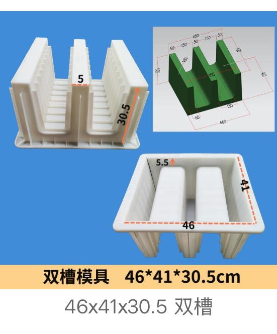
Cable Trench Mould · design 01
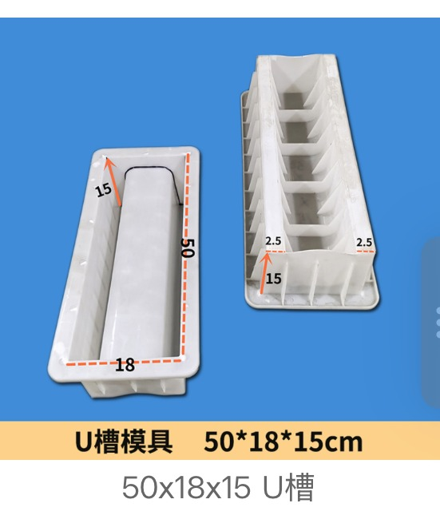
Cable Trench Mould · design 02
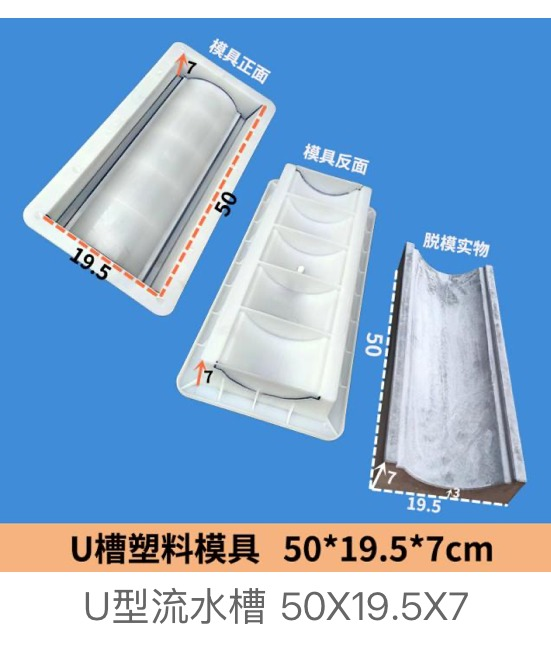
Cable Trench Mould · design 03
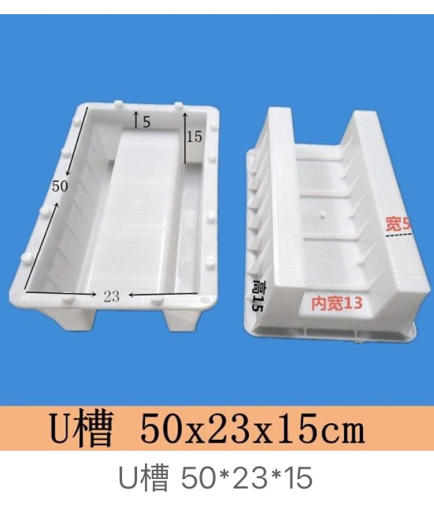
Cable Trench Mould · design 04
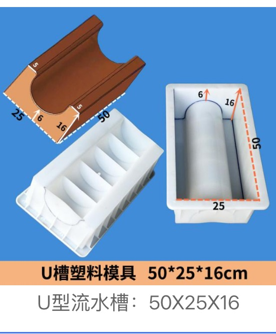
Cable Trench Mould · design 05
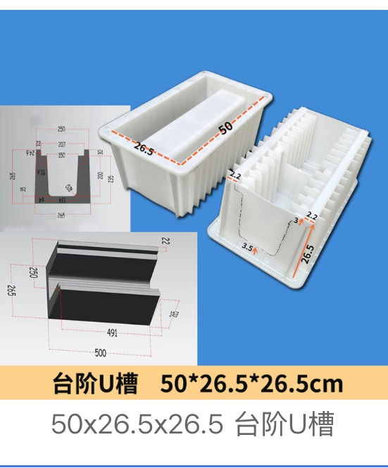
Cable Trench Mould · design 06
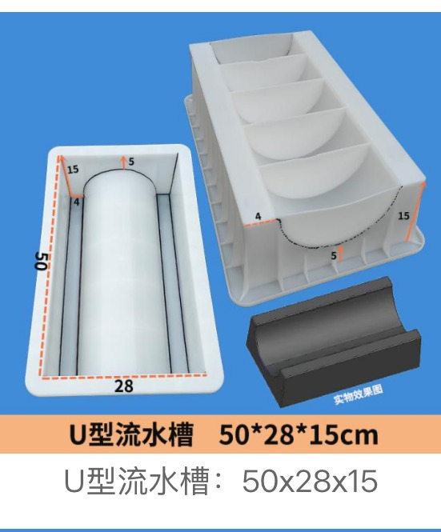
Cable Trench Mould · design 07
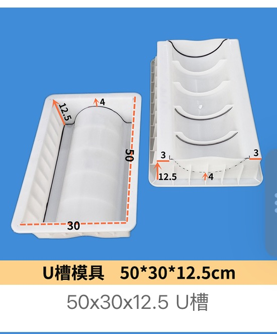
Cable Trench Mould · design 08
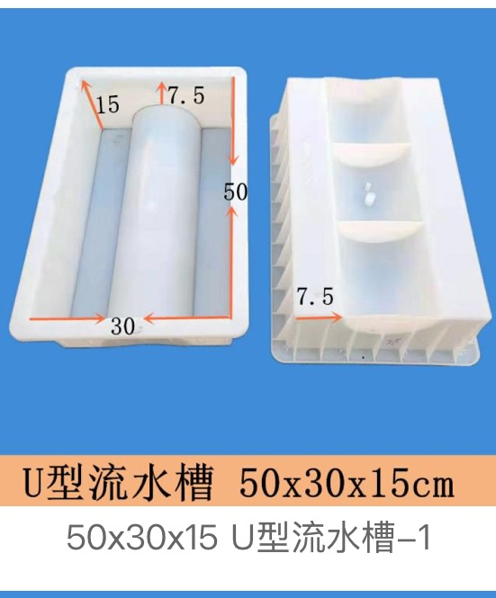
Cable Trench Mould · design 09
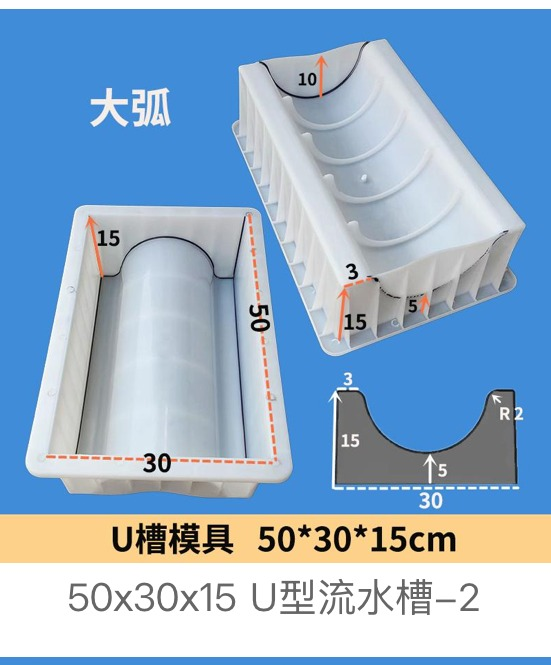
Cable Trench Mould · design 10
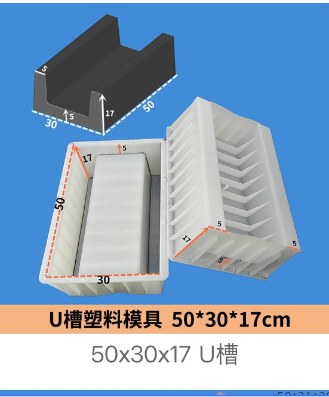
Cable Trench Mould · design 11
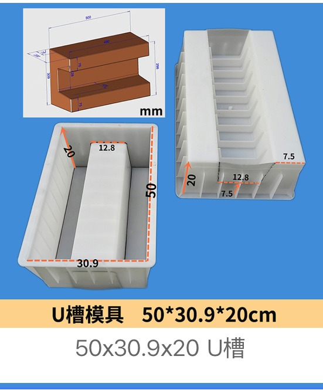
Cable Trench Mould · design 12
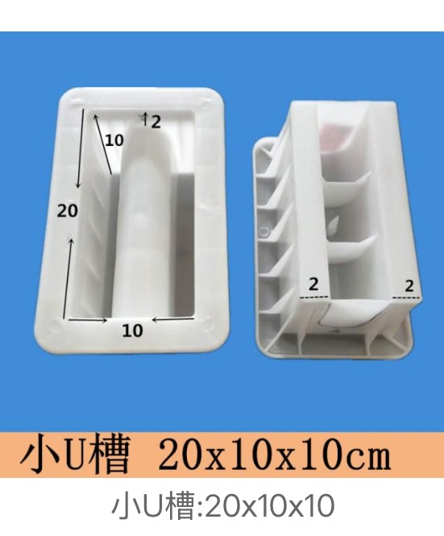
Cable Trench Mould · design 13
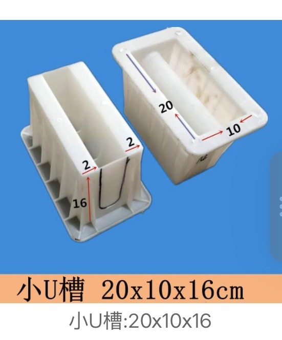
Cable Trench Mould · design 14
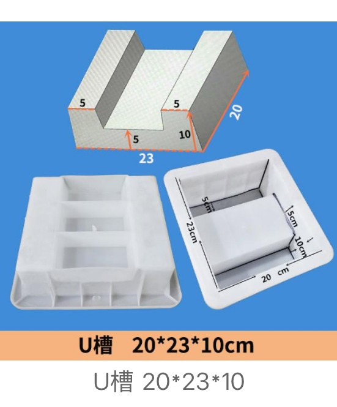
Cable Trench Mould · design 15
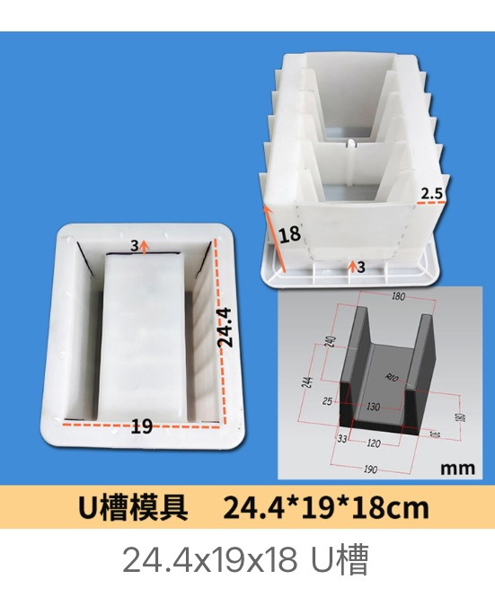
Cable Trench Mould · design 16
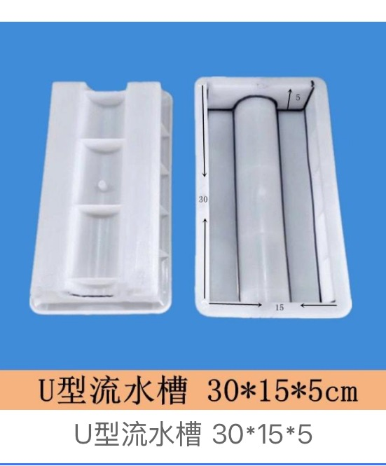
Cable Trench Mould · design 17
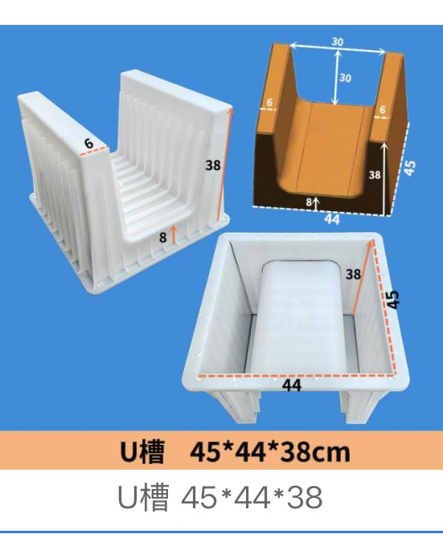
Cable Trench Mould · design 18
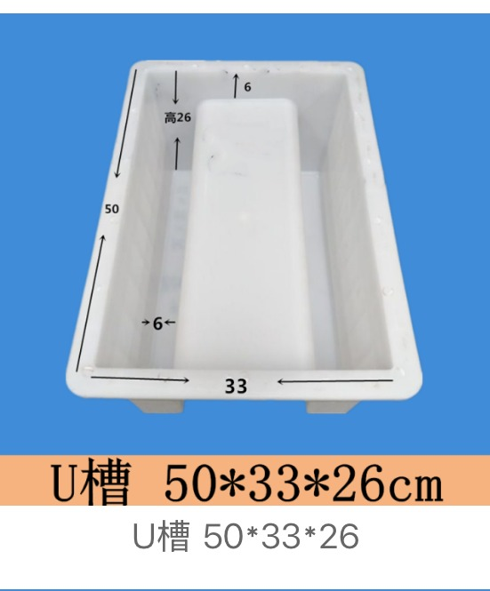
Cable Trench Mould · design 19
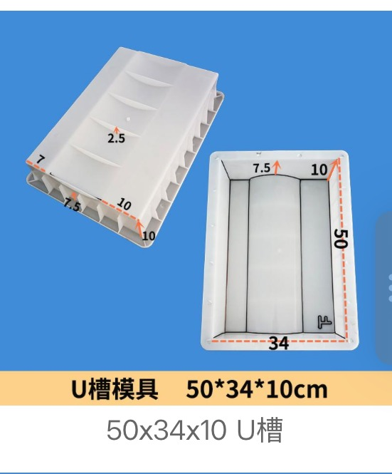
Cable Trench Mould · design 20
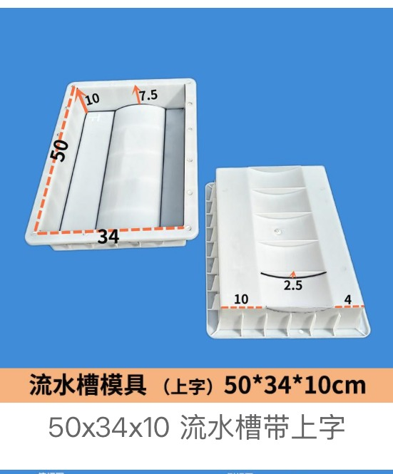
Cable Trench Mould · design 21
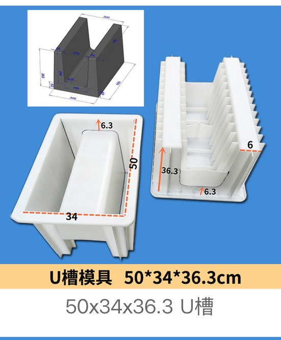
Cable Trench Mould · design 22
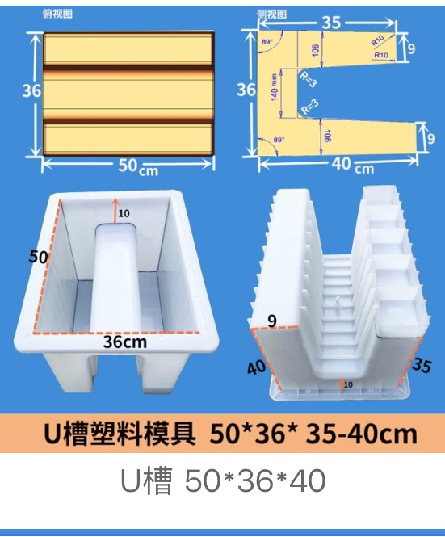
Cable Trench Mould · design 23
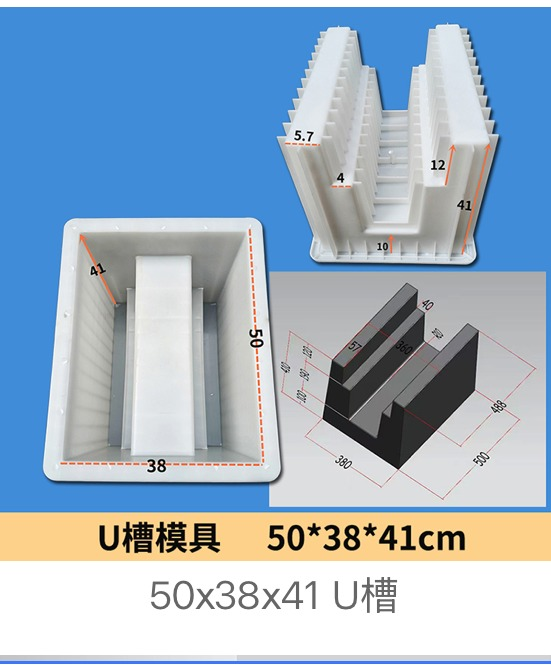
Cable Trench Mould · design 24
Cable trench moulds should be selected by trench body size, cover structure, installation environment and whether the project needs matching utility cover moulds.
For cable trench moulds, small details such as cover grooves, lifting holes, drainage holes and wall thickness affect whether the finished concrete part fits the site installation.
| Project scenario | Suitable mould direction | Quote information needed |
|---|---|---|
| Power cable trench | U-shaped cable trench body plus matching cover mould | Inner width, depth, wall thickness, cover groove and load environment |
| Telecom or railway duct | Utility duct or double-slot cable trough mould | Slot separation, cable route size and installation drawing |
| Industrial park utility corridor | Mixed-size trench body and cover mould order | Size list, quantity by size, destination and packing plan |
Cable trench orders depend heavily on the finished duct size, cover requirement and project installation method. Clear dimensions help us quote faster.
Send your drawing, size or sample photo. We can review catalogue options or OEM mould feasibility.
Send InquiryWhatsApp NowSeveral U-channel and cable trench mould sizes, shown with the CAD section drawings and 3D models they were built from. A trench mould is always quoted from a section: internal width, internal depth, wall thickness and length. Send the section and we will confirm whether it matches existing tooling or needs a new mould.
Yes. Send the finished trench drawing, section profile, cover requirement and any installation details. We can review standard catalogue options or OEM mould feasibility.
Yes. Mixed orders for U-shaped cable trench bodies and matching cover moulds are common for utility projects.
The finished trench size, cover structure, wall thickness, ribs, hole design, mould material requirement and order quantity have the biggest effect on quotation.